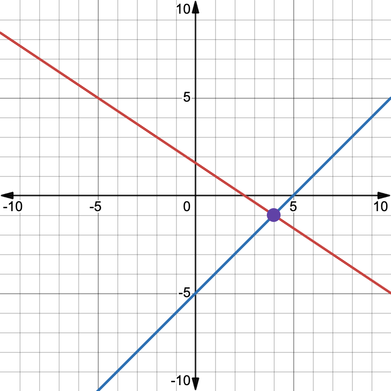
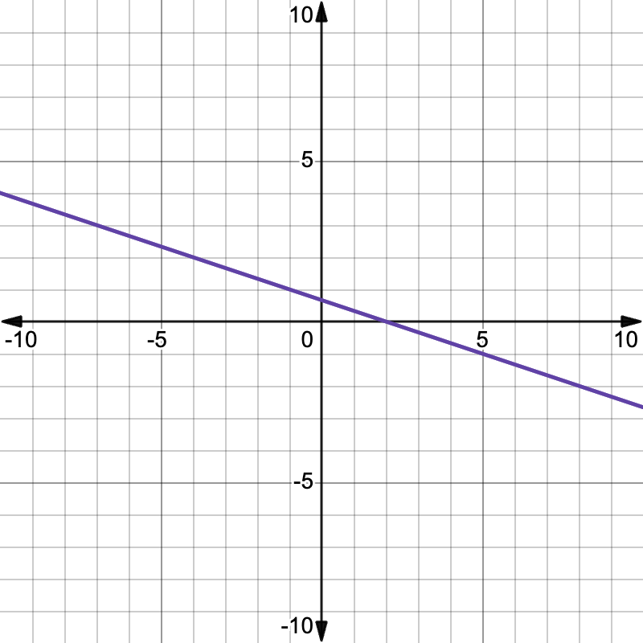
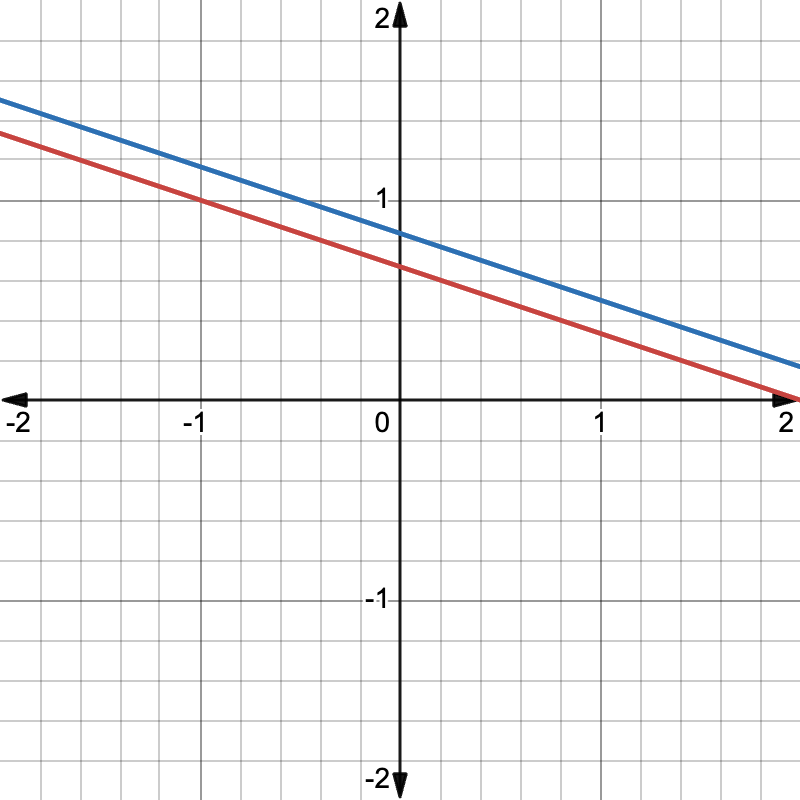

unnamed lin alg website: Simple linear algebra explanations!
This website is a work in progress!
Created by Eldrick Chen, creator of calculusgaming.com. Based on A First Course in Linear Algebra by Robert A. Beezer
Table of Contents
Website Info (start here!)
Units
Credits
Website Update History (Last update: )
Important: You might have to refresh the tab to view the latest updates to this website.
2025-05-17: Initial Release
This is the first version of this website to be released. It features sections from the first unit of A First Course in Linear Algebra (Systems of Equations).
Website Content
Website Settings
Switch to a dark theme for those of you studying late at night! (This setting does not affect any of the images on this page, so they will stay bright.)
If the bright images in dark mode bother you, you can invert the colors of graphs using this setting. Warning: this will change the colors of points and curves on each graph, making graph captions inaccurate in some cases.
Scientific Notation Format
Control the way very large and small numbers are displayed on this website. (Primarily intended for those of you who enjoy incremental games!)
Font Settings
Change this website’s font to a font of your choice! (Note: Font must be installed on your device)
Enter font name:
Font size multiplier (scale the font size by this amount):
Color Settings
Background color:
Text color:
Background Image (or GIF)
Background image size: pixels
Background image horizontal offset: pixels
Background image vertical offset: pixels
Background opacity: 30%
What Is This Website?
A note about links on this page: Internal links (links that bring you to another spot on this page) are colored in light blue. External links (links that open a different website) are colored in dark blue. External links will always open in a new tab.
This is one of the websites in the “unnamed ____ website” series (you can find the rest at calculusgaming.com). For more information about these websites, read the “What Is This Website?” section of unnamed calc website.
The lessons on this page are based on A First Course in Linear Algebra, a free online linear algebra resource. I strongly recommend viewing this page for more detailed explanations and proofs of linear algebra concepts!
| Unit | Progress |
|---|---|
| Systems of Linear Equations | 5/6 |
| Vectors | 0/6 |
| Matrices | 0/6 |
| Vector Spaces | 0/6 |
| Determinants | 0/2 |
| Eigenvalues | 0/3 |
| Linear Transformations | 0/4 |
| Representations | 0/4 |
| All Units |
Unit 1: Systems of Linear Equations
A First Course in Linear Algebra link: http://linear.pugetsound.edu/html/chapter-SLE.html
Intro to Systems of Linear Equations
In algebra, you’ve studied linear systems of equations before. In linear algebra, we’ll study linear systems in more detail, so let’s review them.
A linear equation is an equation of the form \(a_1 x_1 + a_2 x_2 + \cdots + a_n x_n = b\), where \(a_1\) through \(a_n\) are constant coefficients and \(b\) is a constant. A linear system of equations is a set of linear equations.
When we solve a linear equation, that means finding the values of \(x_1\), \(x_2\), ..., \(x_n\) that makes every equation in a system true at the same time.
The set of all solutions to a linear system of equations is known as its solution set. There are three possibilities for the solution set of a linear system of equations.
Linear systems with one solution
Here’s an example of this type of system:
The only solution to this system of equations is \(x_1 = 4\) and \(x_2 = -1\).
We can visually represent this system of equations as two lines: the first equation can be represented by the line \(2x + 3y = 5\) and the second equation by the line \(x - y = 5\). These two lines intersect at exactly one point, which is our solution.
The lines intersect at one point, so the system has one solution.
Linear systems with infinitely many solutions
Here’s an example of this type of system:
Notice how the second equation is just the first equation multiplied by 2, so these two equations are really asking for the same thing! Therefore, there are infinitely many pairs \((x_1, x_2)\) which satisfy both equations.
Visually, we can represent this system of equations with the lines \(x + 3y = 2\) and \(2x + 6y = 4\). These lines are the exact same, so they have infinitely many intersection points!
The lines overlap, so the system has infinitely many solutions.
Linear systems with no solutions
Here’s an example of this type of system:
There are no possible values of \(x_1\) and \(x_2\) that will make both of these equations simultaneously true.
Visually, we can represent this as two lines \(x + 3y = 2\) and \(2x + 6y = 5\). These lines are parallel to each other but not the same line, so there are no intersection points.
The lines are parallel to each other and never overlap, so the system has no solutions.
Equation operations
When we have a system of equations, there are three operations we can perform on them without changing the solution set.
- Swapping the order of two equations
- Multiplying an equation by a nonzero constant
- Adding a constant multiple of one equation to another equation
Here’s an example with this system of equations. We’re going to perform each equation operation once on this system.
An example of the first operation is swapping the order of the first and second equations to get:
We have swapped the order of the highlighted equations.
An example of the second operation is multiplying the third equation by 2 to get:
We have multiplied the highlighted equation by 2.
An example of the third operation is adding 3 times the second equation to the third equation to get:
We have added 3 times the blue equation to the red equation.
Vectors and Matrices
In the section after this one, we will learn how to represent systems of linear equations using vectors and matrices. But let’s first talk about what vectors and matrices even are.
Vectors
A vector is a list of numbers. They can be represented in multiple ways: they can be written out like coordinates (e.g. \((1, 2, 3)\)), or as a column vector, where the numbers are stacked vertically:
There is a special type of vector known as a zero vector, and it’s a vector that only contains zeros. Here’s an example of a zero vector:
Matrices
A matrix is a 2-dimensional grid of numbers. You can think of them as a group of column vectors stacked side by side. Here’s an example:
A matrix with \(m\) rows and \(n\) columns is known as an \(m \times n\) matrix. For this example, because our matrix has 3 rows and 3 columns, it is a \(3 \times 3\) matrix.
In future sections, we will learn how we can use vectors and matrices to describe systems of equations and discover their properties. We will also eventually learn about the operations we can perform on vectors and matrices.
Representing Systems of Linear Equations
We can represent a system of linear equations using a matrix.
The coefficient matrix
The coefficient matrix is a way to represent the coefficients of a linear system of equations. Each row in the coefficient matrix represents the coefficients in one equation. For example, consider the following system of equations:
The coefficients of each equation are highlighted in red. If we put these coefficients into a matrix, we get the coefficient matrix. The coefficient matrix \(A\) for this system of equations is:
Don’t forget about the signs of each coefficient!
The vector of constants
The vector of constants holds the constants that each linear expression in our system of equations equals. Typically, these are the constants on the right-hand side of each equation. Let’s go back to our system of equations:
This time, I’ve highlighted the constants in this system. Putting these vectors into a column vector gives us the vector of constants. The vector of constants \(\mathbf{b}\) for this system is:
The augmented matrix
If we add another column to the right-hand side of the coefficient matrix and fill it up with the vector of constants, we get the augmented matrix for a system of equations. In this example, the augmented matrix is:
Reduced Row-Echelon Form
Now that we know how to represent systems of equations with matrices, how can we use this knowledge to actually solve them? To do this, we need to simplify our systems down into a form that’s simpler. One way to do this is to convert a system’s augmented matrix into a simpler form known as reduced row-echelon form.
A matrix is in reduced row-echelon form when it meets these conditions:
- If a row only contains zeros (this is known as a zero row), it is below all rows that aren’t zero rows.
- The leftmost nonzero number of every row is a 1 (unless the row is a zero row); this 1 is known as a leading 1.
- If a column has a leading 1, it is the only nonzero number in that column.
- Consider any two leading 1s in the matrix. If the row number of the second leading 1 is greater than the row number of the first leading 1, the column number of the second leading 1 must be greater than the column number of the first leading 1.
- In symbols: Let’s say the first leading 1 is in row \(i\) and column \(j\) and the second leading 1 is in row \(s\) and column \(t\). It must always be true that if \(s \gt i\), then \(t \gt j\).
Here’s a matrix that is not in reduced row-echelon form because it violates condition 1:
The highlighted row is not below all other rows with nonzero terms.
Here’s a matrix that violates condition 2:
The highlighted entry is a leading nonzero term of the first row but is not 1.
Here’s a matrix that violates condition 3:
The leading 1 in the second row is not the only nonzero entry in its column (as shown by the highlighted entries).
And finally, here’s a matrix that violates condition 4:
The row number of the blue leading 1 is greater than the row number of the red leading 1, but the column number of the blue leading 1 is less than the row number of the red leading 1.
Here is a matrix in reduced row-echelon form:
Reduced row-echelon form is useful because once we get an augmented matrix into reduced row-echelon form (you will learn how to do this in the next section), it’s easy to find the solutions to the corresponding system of equations.
For example, the corresponding system of equations to the above matrix is:
The last line simplifies to \(0 = 0\), so it is always true no matter what the values of \(x_1\) and \(x_2\) are. Therefore, we can disregard that equation. The other two lines directly give us the values of \(x_1\) and \(x_2\): \(x_1 = 3\) and \(x_2 = 2\).
For a matrix in reduced row-echelon form, a column with a leading 1 is known as a pivot column. In this example, column 1 and column 2 are pivot columns.
A column with a leading 1 is a pivot column.
I will sometimes use the term “row-reducing” to refer to analyzing the reduced row-echelon form of a matrix (without actually changing the original matrix).
Gauss-Jordan Elimination
Gauss-Jordan elimination is a systematic way to turn a matrix into reduced row-echelon form. The basic idea is to go through our matrix column by column and perform row operations to turn this matrix into reduced row-echelon form.
Row operations
There are three row operations we can perform on a matrix without changing the solution set of the corresponding system of equations:
- Swap the order of two rows
- Multiply every entry in a row by a nonzero constant
- Add a constant multiple of one row to another row (i.e. multiply every entry of a row by a constant multiple and add it to the entries of another row without changing the original row)
Notice the similarities between the row operations and equation operations mentioned in Intro to Systems of Linear Equations. When one matrix can be transformed into another matrix through these row operations, the matrices are known as row-equivalent.
Let’s go through the process of Gauss-Jordan elimination with the following matrix:
We first need to define some variables to keep track of where we are in the process. We will define the variables \(j\) and \(r\) and set them both to 0. \(j\) will serve as a counter to keep track of what column we’re on. In addition, we’ll define \(m\) as the number of rows in the matrix \(A\) and \(n\) as the number of columns (i.e. \(A\) is an \(m \times n\) matrix).
The first column (\(j = 1\))
We start off by increasing \(j\) by 1. The variable \(j\) is now 1, meaning that we’re working on the first column.
Now we look at the entries of \(A\) in this column (in this case the first column). If all of the entries in this column from row \(r + 1\) to \(m\) are zero, then we skip this column. \(r + 1\) is currently 1 in this case, so we need to look at all of the entries in this column. These entries are not all zero, so we proceed.
Now we choose a row from rows \(r + 1\) to \(m\) such that the entry in column \(j\) is nonzero. We’ll call the index of this row \(i\). In this case, we can choose any of the rows, so I’ll choose row 1.
Now we increase \(r\) by 1 (after incrementing, \(r\) is 1 now). If \(i\) and \(r\) are different, we swap rows \(i\) and \(r\) of the matrix. In this case, because \(i\) and \(r\) are both 1, we don’t need to do anything here.
Now, we multiply row \(r\) by a constant to make the entry at column \(j\) 1. In this case, the entry at row 1 and column 1 is already 1, so we skip this step.
We then add constant multiples of row \(r\) to all other rows to make all other entries of column \(j\) (in this case, the first column) zero.
Adding -2 times row 1 to row 2:
Adding 4 times row 1 to row 3:
Now we can move on to the next column.
The second column (\(j = 2\))
We add 1 to \(j\), so \(j\) is currently 2. This means that we’re focusing on the second column.
Now we need to choose a row from row \(r + 1\) (which is currently 2) to \(m\) (which is 3) with a nonzero entry in column \(j\) (which is currently 2). I’ll choose row 2 for this example, so \(i = 2\).
Now we increase \(r\) by 1, so it’s currently 2. Because we chose row 2 and \(r = 2\), we don’t need to swap any rows.
Now we need to set the entry at row \(r\) and column \(j\) to a 1 by multiplying row \(r\) by a constant. To do this, we multiply row 2 by \(-1/5\) to turn the entry at row 2 and column 2 to a 1.
Now we have to zero out the other entries of column 2 by adding constant multiples of row 2 to every other row. Let’s start by adding -1 times row 2 to row 1:
Now let’s add -4 times row 2 to row 3:
Now we move on to column 3.
The third column (\(j = 3\))
We need to choose a row from \(r + 1 = 3\) to \(m = 3\). Our only choice in this case is the 3rd row. We then increase \(r\) by 1, so \(r = 3\) now. Therefore, we don’t need to swap any rows.
Now we want the entry at row 3 and column 3 to be a 1, so we multiply row 3 by \(5/41\).
Now we just have to zero out the other entries of column 3. Adding \(-1/5\) times the 3rd row to the 2nd row:
Adding \(-4/5\) times row 3 to row 1:
Our matrix is now in reduced row-echelon form! In this form, we can easily read out the solutions to the corresponding system of equations. Let’s translate this matrix into its corresponding system of equations now:
In this form, we can easily tell that the solution is \(x_1 = 1\), \(x_2 = 3\), and \(x_3 = -2\).
Note that every matrix has only one row-equivalent matrix in reduced row-echelon form.
Consistent Systems of Equations and Free/Dependent Variables
Some systems of equations have no solutions, and some systems of equations have one or infinitely many solutions. When a system of equations has at least one solution, we call it a consistent system. A system of equations with no solutions is an inconsistent system.
Consider the following augmented matrix:
When we convert this matrix into reduced row-echelon form, we get:
The corresponding system of equations is:
We can write this system more simply as:
The last equation \(0 = 0\) is always true, so we can disregard it. But notice what happens with the other two equations. We can rewrite them as follows:
Notice how when we write the solutions in this way, \(x_3\) is free to take on any value, and the values of \(x_1\) and \(x_2\) depend on \(x_3\). Because \(x_3\) can take on any value, there are infinitely many solutions.
We can describe the solution set of this system as all ordered pairs of the form \((x_1, x_2, x_3) = (2 - x_3, x_3, x_3)\) where \(x_3\) is any real number (or even any complex number).
Dependent and free variables
If we have \(A\), the augmented matrix of a system of equations, and \(B\), a row-equivalent matrix in reduced row-echelon form, then if column \(j\) of \(B\) is a pivot column, then the variable \(x_j\) is known as a dependent variable. All other variables are known as free variables.
Let’s look back at our previous example. Here is the matrix in reduced row-echelon form:
The leading 1s are highlighted in red.
Notice that columns 1 and 2 are pivot columns. This means that in the corresponding system of equations, the variables \(x_1\) and \(x_2\) are dependent, and \(x_3\) is free. This is related to how \(x_3\) was able to take on any value in the solution of our system of equations, while the values of \(x_1\) and \(x_2\) depended on the value of \(x_3\).
Determining consistency of systems
We can tell if a system is consistent by looking at the reduced row-echelon form of its corresponding augmented matrix. If this row-reduced matrix has a pivot column at column \(n + 1\), where \(n\) is the number of variables in the system, then the system is inconsistent. Otherwise it is consistent.
For example, consider this system:
The augmented matrix of this system row-reduces to:
Because column \(n + 1 = 4\) of this matrix is a pivot column (as indicated by the highlighted leading 1), this system is inconsistent. (Notice how it is impossible for the equations \(x_1 + x_2 + x_3 = 1\) and \(2x_1 + 2x_2 + 2x_3 = 3\) to be true at the same time!)
In addition, if the row-reduced matrix of a consistent system has \(r\) pivot columns, it is guaranteed that \(r \le n\). If \(r \lt n\), then the system has infinitely many solutions, and if \(r = n\), then the system has exactly one solution.
If a consistent system has more equations than it has variables, then the system has infinitely many solutions.
In conclusion, there are three possibilities for a linear system with \(n\) variables with augmented matrix \(A\):
- If column \(n + 1\) of the reduced row-echelon form of \(A\) is a pivot column, the system is inconsistent and has no solutions.
- Otherwise:
- If the reduced row-echelon form of \(A\) has the same number of pivot columns as it has variables, the system has one solution.
- If the reduced row-echelon form of \(A\) has fewer pivot columns than it has variables, the system has infinitely many solutions.
Counting free variables
We can tell how many free variables a consistent system has by looking at its corresponding matrix in reduced row-echelon form. If this system has \(n\) variables and the matrix in reduced row-echelon form has \(r\) nonzero rows (rows that don’t only contain zeros), then we can describe the solutions of the system with \(n - r\) free variables.
Going back to our first example, the matrix in reduced row-echelon form has two nonzero rows, so \(r = 2\). The system of equations has 3 variables \(x_1\), \(x_2\), and \(x_3\), so \(n = 3\). Therefore, the system of equations has \(n - r = 3 - 2 = 1\) free variable.
This matrix in reduced row-echelon form has 2 pivot columns (as indicated by the highlighted leading 1s). Since the system has 3 variables, there is \(3 - 2 = 1\) free variable in the system.
To contrast this example, let’s say a system has augmented matrix \(A\) and the reduced row-echelon form of \(A\) is:
In this case, the system has 3 variables while the reduced matrix has 3 pivot columns, so there are \(3 - 3 = 0\) free variables.
Homogeneous Systems of Equations and Null Spaces
A homogeneous system of equations is a special type of linear system of equations where all of the constants are zero.
Here’s an example of a homogeneous system:
Notice how the constants (highlighted in red) are zero.
Homogeneous systems are always consistent: you can always find a solution to a homogeneous system by setting all of the variables to zero (this is known as the trivial solution).
In this case, setting \(x_1\), \(x_2\), and \(x_3\) all to zero results in all three equations becoming \(0 = 0\).
Are there any other solutions to this system? We can find that out by row-reducing the augmented matrix to get:
Converting this back into a system of equations, we have:
Therefore, the trivial solution to this system is also the only solution.
If a homogeneous system has more variables than equations, it has infinitely many solutions (this is because homogeneous systems are always consistent and a consistent system with more variables than equations has infinitely many solutions).
Null spaces of matrices
The null space of a matrix \(A\) is the solution set of the system of equations with \(A\) as its coefficient matrix and the zero vector as its vector of constants (i.e. all of the constants are zero).
Let’s look at the coefficient matrix for our previous system of equations:
The null space of this matrix is the solution set to our previous system of equations. In this case, the null space only contains the zero vector, since that’s the only solution to our system of equations.
Now let’s look at another matrix:
The full augmented matrix for the homogeneous system of equations for this matrix is:
Row-reducing this matrix results in:
The leading 1s are highlighted.
Because there are 2 pivot columns and 3 variables, there is \(3 - 2 = 1\) free variable. Therefore, there are infinitely many solutions to the system. As a result, the null space of our original matrix \(A\) has infinitely many elements, with each element being a solution to the system.
Singular Matrices
Before we talk about singular matrices, let’s define some special types of matrices.
Square matrices
A square matrix is a matrix with the same number of rows and columns.
Here’s an example of a square matrix:
This matrix has 3 rows and 3 columns, so it is square.
Here’s an example of a non-square matrix:
This matrix has 3 rows and 4 columns, so it is not square.
Identity matrices
An identity matrix is a square matrix with all 1s on the main diagonal and 0s everywhere else. More formally, the \(n \times n\) identity matrix, denoted by \(I_n\), is defined by:
In simple words, the entry at row \(i\) and column \(j\) is 1 if \(i\) and \(j\) are equal and 0 otherwise.
Here are some examples of identity matrices:
Singular matrices
A square matrix \(A\) is singular if the system of equations with \(A\) as its coefficient matrix and all-zero constants has infinitely many solutions (equivalently, the system has non-trivial solutions). If the system of equations has only the trivial solution, the matrix \(A\) is nonsingular.
In the previous example, we looked at this matrix:
We found that the only solution to the corresponding homogeneous system of equations was the trivial solution where all of the variables were set to zero. Therefore, this matrix is nonsingular.
This is the corresponding homogeneous system. The system only has the trivial solution, so the coefficient matrix is nonsingular.
We also looked at this matrix:
We found that the corresponding homogeneous system had infinitely many solutions, so this matrix is singular.
This is the corresponding homogeneous system. The system has infinitely many solutions, so the coefficient matrix is singular.
An interesting fact about nonsingular matrices is that reducing any nonsingular matrix to reduced row-echelon form always results in an identity matrix. More formally, a matrix is nonsingular if and only if the matrix in reduced row-echelon form is an identity matrix.
Here are the reduced row-echelon forms of the previous two matrices:
This matrix is nonsingular, so it row-reduces to an identity matrix.
This matrix is singular, so it does not row-reduce to an identity matrix.
The null space of a nonsingular matrix contains just one element: the zero vector. A square matrix \(A\) is nonsingular if and only if its null space only contains the zero vector.
In addition, a square matrix \(A\) is nonsingular if and only if the system of equations with coefficient matrix \(A\) and vector of constants \(\mathbf{b}\) has a single unique solution for any possible choice for \(\mathbf{b}\).
To summarize, for any matrix \(A\), the following properties are equivalent (meaning for every property, all other properties are true if and only if that property is true):
- \(A\) is a nonsingular matrix.
- The reduced row-echelon form of \(A\) is an identity matrix.
- The null space of \(A\) contains only the zero vector.
- The linear system of equations with coefficient matrix \(A\) and vector of constants \(\mathbf{b}\) has a single unique solution for every possible choice of \(\mathbf{b}\).
Credits / Special Thanks
All code, diagrams, and explanations (except those in the “Guest Explanations” section) were created by Eldrick Chen (also known as “calculus gaming”). This page is open-source - view the GitHub repository here.
Feel free to modify this website in any way! If you have ideas for how to improve this website, feel free to make those changes and publish them yourself, as long as you follow the terms of the GNU General Public License v3.0 (scroll down to view this license).
👋 Hello! I’m Eldrick, and I originally started making educational math websites as a passion project to help people at my school.
Despite being (mostly) the only one to directly work on this project, it wouldn’t have been possible if it wasn’t for the work of many others. Here are some people and organizations I want to credit for allowing me to build this website in the first place.
Tools used to create this page
-
Tools used to create the images and animations on this page:
- Desmos Graphing Calculator for 2D graphs
- Desmos 3D Graphing Calculator for 3D graphs
- Google Drawings for extra annotations, other types of diagrams, and sidebar icons
- imgonline.tools to make the website logo transparent
- JavaScript libraries used to make this website do cool things (these are all licensed under Apache License 2.0):
Fonts used on this page
- The font used for this page is Monospace Typewriter, was created by Manfred Klein.
- The font used in some of my diagrams is Open Sans.
Special thanks
- Thanks to A First Course in Linear Algebra by Robert A. Beezer for allowing me to learn linear algebra for free! The content on my page is based on this resource.
-
Thanks to the creators of the Fast Inverse Square Root algorithm. I was inspired to create calculus websites after creating a page explaining this algorithm. Researching this algorithm ignited my passion for calculus and inspired me to create educational math websites!
- Thanks to YouTuber Nemean for introducing me to the Fast Inverse Square Root algorithm with his amazing video on the subject.
- Thanks to Hevipelle and many others for creating the awesome game Antimatter Dimensions. This game inspired me to use this font for this website and also inspired the idea of naming each update in the update notes with a word or phrase rather than with a version number. Both of these things are done in Antimatter Dimensions and I’ve decided to do them on my website too!
Legal information
- View Monospace Typewriter (this font)’s license here.
- Open Sans is licensed under the Open Font License. License details on Google Fonts
- Math.js copyright notice:
-
math.js https://github.com/josdejong/mathjs Copyright (C) 2013-2023 Jos de Jong <wjosdejong@gmail.com> Licensed under the Apache License, Version 2.0 (the "License"); you may not use this file except in compliance with the License. You may obtain a copy of the License at https://www.apache.org/licenses/LICENSE-2.0 Unless required by applicable law or agreed to in writing, software distributed under the License is distributed on an "AS IS" BASIS, WITHOUT WARRANTIES OR CONDITIONS OF ANY KIND, either express or implied. See the License for the specific language governing permissions and limitations under the License.
-
-
Copyright notice for this website:
- Copyright © 2025 Eldrick Chen
- This page is licensed under the GNU General Public License v3.0. Details:
-
This program is free software: you can redistribute it and/or modify it under the terms of the GNU General Public License as published by the Free Software Foundation, either version 3 of the License, or (at your option) any later version. This program is distributed in the hope that it will be useful, but WITHOUT ANY WARRANTY; without even the implied warranty of MERCHANTABILITY or FITNESS FOR A PARTICULAR PURPOSE. See the GNU General Public License for more details.GNU GENERAL PUBLIC LICENSE Version 3, 29 June 2007 Copyright (C) 2007 Free Software Foundation, Inc. <https://fsf.org/> Everyone is permitted to copy and distribute verbatim copies of this license document, but changing it is not allowed. Preamble The GNU General Public License is a free, copyleft license for software and other kinds of works. The licenses for most software and other practical works are designed to take away your freedom to share and change the works. By contrast, the GNU General Public License is intended to guarantee your freedom to share and change all versions of a program--to make sure it remains free software for all its users. We, the Free Software Foundation, use the GNU General Public License for most of our software; it applies also to any other work released this way by its authors. You can apply it to your programs, too. When we speak of free software, we are referring to freedom, not price. Our General Public Licenses are designed to make sure that you have the freedom to distribute copies of free software (and charge for them if you wish), that you receive source code or can get it if you want it, that you can change the software or use pieces of it in new free programs, and that you know you can do these things. To protect your rights, we need to prevent others from denying you these rights or asking you to surrender the rights. Therefore, you have certain responsibilities if you distribute copies of the software, or if you modify it: responsibilities to respect the freedom of others. For example, if you distribute copies of such a program, whether gratis or for a fee, you must pass on to the recipients the same freedoms that you received. You must make sure that they, too, receive or can get the source code. And you must show them these terms so they know their rights. Developers that use the GNU GPL protect your rights with two steps: (1) assert copyright on the software, and (2) offer you this License giving you legal permission to copy, distribute and/or modify it. For the developers' and authors' protection, the GPL clearly explains that there is no warranty for this free software. For both users' and authors' sake, the GPL requires that modified versions be marked as changed, so that their problems will not be attributed erroneously to authors of previous versions. Some devices are designed to deny users access to install or run modified versions of the software inside them, although the manufacturer can do so. This is fundamentally incompatible with the aim of protecting users' freedom to change the software. The systematic pattern of such abuse occurs in the area of products for individuals to use, which is precisely where it is most unacceptable. Therefore, we have designed this version of the GPL to prohibit the practice for those products. If such problems arise substantially in other domains, we stand ready to extend this provision to those domains in future versions of the GPL, as needed to protect the freedom of users. Finally, every program is threatened constantly by software patents. States should not allow patents to restrict development and use of software on general-purpose computers, but in those that do, we wish to avoid the special danger that patents applied to a free program could make it effectively proprietary. To prevent this, the GPL assures that patents cannot be used to render the program non-free. The precise terms and conditions for copying, distribution and modification follow. TERMS AND CONDITIONS 0. Definitions. "This License" refers to version 3 of the GNU General Public License. "Copyright" also means copyright-like laws that apply to other kinds of works, such as semiconductor masks. "The Program" refers to any copyrightable work licensed under this License. Each licensee is addressed as "you". "Licensees" and "recipients" may be individuals or organizations. To "modify" a work means to copy from or adapt all or part of the work in a fashion requiring copyright permission, other than the making of an exact copy. The resulting work is called a "modified version" of the earlier work or a work "based on" the earlier work. A "covered work" means either the unmodified Program or a work based on the Program. To "propagate" a work means to do anything with it that, without permission, would make you directly or secondarily liable for infringement under applicable copyright law, except executing it on a computer or modifying a private copy. Propagation includes copying, distribution (with or without modification), making available to the public, and in some countries other activities as well. To "convey" a work means any kind of propagation that enables other parties to make or receive copies. Mere interaction with a user through a computer network, with no transfer of a copy, is not conveying. An interactive user interface displays "Appropriate Legal Notices" to the extent that it includes a convenient and prominently visible feature that (1) displays an appropriate copyright notice, and (2) tells the user that there is no warranty for the work (except to the extent that warranties are provided), that licensees may convey the work under this License, and how to view a copy of this License. If the interface presents a list of user commands or options, such as a menu, a prominent item in the list meets this criterion. 1. Source Code. The "source code" for a work means the preferred form of the work for making modifications to it. "Object code" means any non-source form of a work. A "Standard Interface" means an interface that either is an official standard defined by a recognized standards body, or, in the case of interfaces specified for a particular programming language, one that is widely used among developers working in that language. The "System Libraries" of an executable work include anything, other than the work as a whole, that (a) is included in the normal form of packaging a Major Component, but which is not part of that Major Component, and (b) serves only to enable use of the work with that Major Component, or to implement a Standard Interface for which an implementation is available to the public in source code form. A "Major Component", in this context, means a major essential component (kernel, window system, and so on) of the specific operating system (if any) on which the executable work runs, or a compiler used to produce the work, or an object code interpreter used to run it. The "Corresponding Source" for a work in object code form means all the source code needed to generate, install, and (for an executable work) run the object code and to modify the work, including scripts to control those activities. However, it does not include the work's System Libraries, or general-purpose tools or generally available free programs which are used unmodified in performing those activities but which are not part of the work. For example, Corresponding Source includes interface definition files associated with source files for the work, and the source code for shared libraries and dynamically linked subprograms that the work is specifically designed to require, such as by intimate data communication or control flow between those subprograms and other parts of the work. The Corresponding Source need not include anything that users can regenerate automatically from other parts of the Corresponding Source. The Corresponding Source for a work in source code form is that same work. 2. Basic Permissions. All rights granted under this License are granted for the term of copyright on the Program, and are irrevocable provided the stated conditions are met. This License explicitly affirms your unlimited permission to run the unmodified Program. The output from running a covered work is covered by this License only if the output, given its content, constitutes a covered work. This License acknowledges your rights of fair use or other equivalent, as provided by copyright law. You may make, run and propagate covered works that you do not convey, without conditions so long as your license otherwise remains in force. You may convey covered works to others for the sole purpose of having them make modifications exclusively for you, or provide you with facilities for running those works, provided that you comply with the terms of this License in conveying all material for which you do not control copyright. Those thus making or running the covered works for you must do so exclusively on your behalf, under your direction and control, on terms that prohibit them from making any copies of your copyrighted material outside their relationship with you. Conveying under any other circumstances is permitted solely under the conditions stated below. Sublicensing is not allowed; section 10 makes it unnecessary. 3. Protecting Users' Legal Rights From Anti-Circumvention Law. No covered work shall be deemed part of an effective technological measure under any applicable law fulfilling obligations under article 11 of the WIPO copyright treaty adopted on 20 December 1996, or similar laws prohibiting or restricting circumvention of such measures. When you convey a covered work, you waive any legal power to forbid circumvention of technological measures to the extent such circumvention is effected by exercising rights under this License with respect to the covered work, and you disclaim any intention to limit operation or modification of the work as a means of enforcing, against the work's users, your or third parties' legal rights to forbid circumvention of technological measures. 4. Conveying Verbatim Copies. You may convey verbatim copies of the Program's source code as you receive it, in any medium, provided that you conspicuously and appropriately publish on each copy an appropriate copyright notice; keep intact all notices stating that this License and any non-permissive terms added in accord with section 7 apply to the code; keep intact all notices of the absence of any warranty; and give all recipients a copy of this License along with the Program. You may charge any price or no price for each copy that you convey, and you may offer support or warranty protection for a fee. 5. Conveying Modified Source Versions. You may convey a work based on the Program, or the modifications to produce it from the Program, in the form of source code under the terms of section 4, provided that you also meet all of these conditions: a) The work must carry prominent notices stating that you modified it, and giving a relevant date. b) The work must carry prominent notices stating that it is released under this License and any conditions added under section 7. This requirement modifies the requirement in section 4 to "keep intact all notices". c) You must license the entire work, as a whole, under this License to anyone who comes into possession of a copy. This License will therefore apply, along with any applicable section 7 additional terms, to the whole of the work, and all its parts, regardless of how they are packaged. This License gives no permission to license the work in any other way, but it does not invalidate such permission if you have separately received it. d) If the work has interactive user interfaces, each must display Appropriate Legal Notices; however, if the Program has interactive interfaces that do not display Appropriate Legal Notices, your work need not make them do so. A compilation of a covered work with other separate and independent works, which are not by their nature extensions of the covered work, and which are not combined with it such as to form a larger program, in or on a volume of a storage or distribution medium, is called an "aggregate" if the compilation and its resulting copyright are not used to limit the access or legal rights of the compilation's users beyond what the individual works permit. Inclusion of a covered work in an aggregate does not cause this License to apply to the other parts of the aggregate. 6. Conveying Non-Source Forms. You may convey a covered work in object code form under the terms of sections 4 and 5, provided that you also convey the machine-readable Corresponding Source under the terms of this License, in one of these ways: a) Convey the object code in, or embodied in, a physical product (including a physical distribution medium), accompanied by the Corresponding Source fixed on a durable physical medium customarily used for software interchange. b) Convey the object code in, or embodied in, a physical product (including a physical distribution medium), accompanied by a written offer, valid for at least three years and valid for as long as you offer spare parts or customer support for that product model, to give anyone who possesses the object code either (1) a copy of the Corresponding Source for all the software in the product that is covered by this License, on a durable physical medium customarily used for software interchange, for a price no more than your reasonable cost of physically performing this conveying of source, or (2) access to copy the Corresponding Source from a network server at no charge. c) Convey individual copies of the object code with a copy of the written offer to provide the Corresponding Source. This alternative is allowed only occasionally and noncommercially, and only if you received the object code with such an offer, in accord with subsection 6b. d) Convey the object code by offering access from a designated place (gratis or for a charge), and offer equivalent access to the Corresponding Source in the same way through the same place at no further charge. You need not require recipients to copy the Corresponding Source along with the object code. If the place to copy the object code is a network server, the Corresponding Source may be on a different server (operated by you or a third party) that supports equivalent copying facilities, provided you maintain clear directions next to the object code saying where to find the Corresponding Source. Regardless of what server hosts the Corresponding Source, you remain obligated to ensure that it is available for as long as needed to satisfy these requirements. e) Convey the object code using peer-to-peer transmission, provided you inform other peers where the object code and Corresponding Source of the work are being offered to the general public at no charge under subsection 6d. A separable portion of the object code, whose source code is excluded from the Corresponding Source as a System Library, need not be included in conveying the object code work. A "User Product" is either (1) a "consumer product", which means any tangible personal property which is normally used for personal, family, or household purposes, or (2) anything designed or sold for incorporation into a dwelling. In determining whether a product is a consumer product, doubtful cases shall be resolved in favor of coverage. For a particular product received by a particular user, "normally used" refers to a typical or common use of that class of product, regardless of the status of the particular user or of the way in which the particular user actually uses, or expects or is expected to use, the product. A product is a consumer product regardless of whether the product has substantial commercial, industrial or non-consumer uses, unless such uses represent the only significant mode of use of the product. "Installation Information" for a User Product means any methods, procedures, authorization keys, or other information required to install and execute modified versions of a covered work in that User Product from a modified version of its Corresponding Source. The information must suffice to ensure that the continued functioning of the modified object code is in no case prevented or interfered with solely because modification has been made. If you convey an object code work under this section in, or with, or specifically for use in, a User Product, and the conveying occurs as part of a transaction in which the right of possession and use of the User Product is transferred to the recipient in perpetuity or for a fixed term (regardless of how the transaction is characterized), the Corresponding Source conveyed under this section must be accompanied by the Installation Information. But this requirement does not apply if neither you nor any third party retains the ability to install modified object code on the User Product (for example, the work has been installed in ROM). The requirement to provide Installation Information does not include a requirement to continue to provide support service, warranty, or updates for a work that has been modified or installed by the recipient, or for the User Product in which it has been modified or installed. Access to a network may be denied when the modification itself materially and adversely affects the operation of the network or violates the rules and protocols for communication across the network. Corresponding Source conveyed, and Installation Information provided, in accord with this section must be in a format that is publicly documented (and with an implementation available to the public in source code form), and must require no special password or key for unpacking, reading or copying. 7. Additional Terms. "Additional permissions" are terms that supplement the terms of this License by making exceptions from one or more of its conditions. Additional permissions that are applicable to the entire Program shall be treated as though they were included in this License, to the extent that they are valid under applicable law. If additional permissions apply only to part of the Program, that part may be used separately under those permissions, but the entire Program remains governed by this License without regard to the additional permissions. When you convey a copy of a covered work, you may at your option remove any additional permissions from that copy, or from any part of it. (Additional permissions may be written to require their own removal in certain cases when you modify the work.) You may place additional permissions on material, added by you to a covered work, for which you have or can give appropriate copyright permission. Notwithstanding any other provision of this License, for material you add to a covered work, you may (if authorized by the copyright holders of that material) supplement the terms of this License with terms: a) Disclaiming warranty or limiting liability differently from the terms of sections 15 and 16 of this License; or b) Requiring preservation of specified reasonable legal notices or author attributions in that material or in the Appropriate Legal Notices displayed by works containing it; or c) Prohibiting misrepresentation of the origin of that material, or requiring that modified versions of such material be marked in reasonable ways as different from the original version; or d) Limiting the use for publicity purposes of names of licensors or authors of the material; or e) Declining to grant rights under trademark law for use of some trade names, trademarks, or service marks; or f) Requiring indemnification of licensors and authors of that material by anyone who conveys the material (or modified versions of it) with contractual assumptions of liability to the recipient, for any liability that these contractual assumptions directly impose on those licensors and authors. All other non-permissive additional terms are considered "further restrictions" within the meaning of section 10. If the Program as you received it, or any part of it, contains a notice stating that it is governed by this License along with a term that is a further restriction, you may remove that term. If a license document contains a further restriction but permits relicensing or conveying under this License, you may add to a covered work material governed by the terms of that license document, provided that the further restriction does not survive such relicensing or conveying. If you add terms to a covered work in accord with this section, you must place, in the relevant source files, a statement of the additional terms that apply to those files, or a notice indicating where to find the applicable terms. Additional terms, permissive or non-permissive, may be stated in the form of a separately written license, or stated as exceptions; the above requirements apply either way. 8. Termination. You may not propagate or modify a covered work except as expressly provided under this License. Any attempt otherwise to propagate or modify it is void, and will automatically terminate your rights under this License (including any patent licenses granted under the third paragraph of section 11). However, if you cease all violation of this License, then your license from a particular copyright holder is reinstated (a) provisionally, unless and until the copyright holder explicitly and finally terminates your license, and (b) permanently, if the copyright holder fails to notify you of the violation by some reasonable means prior to 60 days after the cessation. Moreover, your license from a particular copyright holder is reinstated permanently if the copyright holder notifies you of the violation by some reasonable means, this is the first time you have received notice of violation of this License (for any work) from that copyright holder, and you cure the violation prior to 30 days after your receipt of the notice. Termination of your rights under this section does not terminate the licenses of parties who have received copies or rights from you under this License. If your rights have been terminated and not permanently reinstated, you do not qualify to receive new licenses for the same material under section 10. 9. Acceptance Not Required for Having Copies. You are not required to accept this License in order to receive or run a copy of the Program. Ancillary propagation of a covered work occurring solely as a consequence of using peer-to-peer transmission to receive a copy likewise does not require acceptance. However, nothing other than this License grants you permission to propagate or modify any covered work. These actions infringe copyright if you do not accept this License. Therefore, by modifying or propagating a covered work, you indicate your acceptance of this License to do so. 10. Automatic Licensing of Downstream Recipients. Each time you convey a covered work, the recipient automatically receives a license from the original licensors, to run, modify and propagate that work, subject to this License. You are not responsible for enforcing compliance by third parties with this License. An "entity transaction" is a transaction transferring control of an organization, or substantially all assets of one, or subdividing an organization, or merging organizations. If propagation of a covered work results from an entity transaction, each party to that transaction who receives a copy of the work also receives whatever licenses to the work the party's predecessor in interest had or could give under the previous paragraph, plus a right to possession of the Corresponding Source of the work from the predecessor in interest, if the predecessor has it or can get it with reasonable efforts. You may not impose any further restrictions on the exercise of the rights granted or affirmed under this License. For example, you may not impose a license fee, royalty, or other charge for exercise of rights granted under this License, and you may not initiate litigation (including a cross-claim or counterclaim in a lawsuit) alleging that any patent claim is infringed by making, using, selling, offering for sale, or importing the Program or any portion of it. 11. Patents. A "contributor" is a copyright holder who authorizes use under this License of the Program or a work on which the Program is based. The work thus licensed is called the contributor's "contributor version". A contributor's "essential patent claims" are all patent claims owned or controlled by the contributor, whether already acquired or hereafter acquired, that would be infringed by some manner, permitted by this License, of making, using, or selling its contributor version, but do not include claims that would be infringed only as a consequence of further modification of the contributor version. For purposes of this definition, "control" includes the right to grant patent sublicenses in a manner consistent with the requirements of this License. Each contributor grants you a non-exclusive, worldwide, royalty-free patent license under the contributor's essential patent claims, to make, use, sell, offer for sale, import and otherwise run, modify and propagate the contents of its contributor version. In the following three paragraphs, a "patent license" is any express agreement or commitment, however denominated, not to enforce a patent (such as an express permission to practice a patent or covenant not to sue for patent infringement). To "grant" such a patent license to a party means to make such an agreement or commitment not to enforce a patent against the party. If you convey a covered work, knowingly relying on a patent license, and the Corresponding Source of the work is not available for anyone to copy, free of charge and under the terms of this License, through a publicly available network server or other readily accessible means, then you must either (1) cause the Corresponding Source to be so available, or (2) arrange to deprive yourself of the benefit of the patent license for this particular work, or (3) arrange, in a manner consistent with the requirements of this License, to extend the patent license to downstream recipients. "Knowingly relying" means you have actual knowledge that, but for the patent license, your conveying the covered work in a country, or your recipient's use of the covered work in a country, would infringe one or more identifiable patents in that country that you have reason to believe are valid. If, pursuant to or in connection with a single transaction or arrangement, you convey, or propagate by procuring conveyance of, a covered work, and grant a patent license to some of the parties receiving the covered work authorizing them to use, propagate, modify or convey a specific copy of the covered work, then the patent license you grant is automatically extended to all recipients of the covered work and works based on it. A patent license is "discriminatory" if it does not include within the scope of its coverage, prohibits the exercise of, or is conditioned on the non-exercise of one or more of the rights that are specifically granted under this License. You may not convey a covered work if you are a party to an arrangement with a third party that is in the business of distributing software, under which you make payment to the third party based on the extent of your activity of conveying the work, and under which the third party grants, to any of the parties who would receive the covered work from you, a discriminatory patent license (a) in connection with copies of the covered work conveyed by you (or copies made from those copies), or (b) primarily for and in connection with specific products or compilations that contain the covered work, unless you entered into that arrangement, or that patent license was granted, prior to 28 March 2007. Nothing in this License shall be construed as excluding or limiting any implied license or other defenses to infringement that may otherwise be available to you under applicable patent law. 12. No Surrender of Others' Freedom. If conditions are imposed on you (whether by court order, agreement or otherwise) that contradict the conditions of this License, they do not excuse you from the conditions of this License. If you cannot convey a covered work so as to satisfy simultaneously your obligations under this License and any other pertinent obligations, then as a consequence you may not convey it at all. For example, if you agree to terms that obligate you to collect a royalty for further conveying from those to whom you convey the Program, the only way you could satisfy both those terms and this License would be to refrain entirely from conveying the Program. 13. Use with the GNU Affero General Public License. Notwithstanding any other provision of this License, you have permission to link or combine any covered work with a work licensed under version 3 of the GNU Affero General Public License into a single combined work, and to convey the resulting work. The terms of this License will continue to apply to the part which is the covered work, but the special requirements of the GNU Affero General Public License, section 13, concerning interaction through a network will apply to the combination as such. 14. Revised Versions of this License. The Free Software Foundation may publish revised and/or new versions of the GNU General Public License from time to time. Such new versions will be similar in spirit to the present version, but may differ in detail to address new problems or concerns. Each version is given a distinguishing version number. If the Program specifies that a certain numbered version of the GNU General Public License "or any later version" applies to it, you have the option of following the terms and conditions either of that numbered version or of any later version published by the Free Software Foundation. If the Program does not specify a version number of the GNU General Public License, you may choose any version ever published by the Free Software Foundation. If the Program specifies that a proxy can decide which future versions of the GNU General Public License can be used, that proxy's public statement of acceptance of a version permanently authorizes you to choose that version for the Program. Later license versions may give you additional or different permissions. However, no additional obligations are imposed on any author or copyright holder as a result of your choosing to follow a later version. 15. Disclaimer of Warranty. THERE IS NO WARRANTY FOR THE PROGRAM, TO THE EXTENT PERMITTED BY APPLICABLE LAW. EXCEPT WHEN OTHERWISE STATED IN WRITING THE COPYRIGHT HOLDERS AND/OR OTHER PARTIES PROVIDE THE PROGRAM "AS IS" WITHOUT WARRANTY OF ANY KIND, EITHER EXPRESSED OR IMPLIED, INCLUDING, BUT NOT LIMITED TO, THE IMPLIED WARRANTIES OF MERCHANTABILITY AND FITNESS FOR A PARTICULAR PURPOSE. THE ENTIRE RISK AS TO THE QUALITY AND PERFORMANCE OF THE PROGRAM IS WITH YOU. SHOULD THE PROGRAM PROVE DEFECTIVE, YOU ASSUME THE COST OF ALL NECESSARY SERVICING, REPAIR OR CORRECTION. 16. Limitation of Liability. IN NO EVENT UNLESS REQUIRED BY APPLICABLE LAW OR AGREED TO IN WRITING WILL ANY COPYRIGHT HOLDER, OR ANY OTHER PARTY WHO MODIFIES AND/OR CONVEYS THE PROGRAM AS PERMITTED ABOVE, BE LIABLE TO YOU FOR DAMAGES, INCLUDING ANY GENERAL, SPECIAL, INCIDENTAL OR CONSEQUENTIAL DAMAGES ARISING OUT OF THE USE OR INABILITY TO USE THE PROGRAM (INCLUDING BUT NOT LIMITED TO LOSS OF DATA OR DATA BEING RENDERED INACCURATE OR LOSSES SUSTAINED BY YOU OR THIRD PARTIES OR A FAILURE OF THE PROGRAM TO OPERATE WITH ANY OTHER PROGRAMS), EVEN IF SUCH HOLDER OR OTHER PARTY HAS BEEN ADVISED OF THE POSSIBILITY OF SUCH DAMAGES. 17. Interpretation of Sections 15 and 16. If the disclaimer of warranty and limitation of liability provided above cannot be given local legal effect according to their terms, reviewing courts shall apply local law that most closely approximates an absolute waiver of all civil liability in connection with the Program, unless a warranty or assumption of liability accompanies a copy of the Program in return for a fee. END OF TERMS AND CONDITIONS How to Apply These Terms to Your New Programs If you develop a new program, and you want it to be of the greatest possible use to the public, the best way to achieve this is to make it free software which everyone can redistribute and change under these terms. To do so, attach the following notices to the program. It is safest to attach them to the start of each source file to most effectively state the exclusion of warranty; and each file should have at least the "copyright" line and a pointer to where the full notice is found. <one line to give the program's name and a brief idea of what it does.> Copyright (C) <year> <name of author> This program is free software: you can redistribute it and/or modify it under the terms of the GNU General Public License as published by the Free Software Foundation, either version 3 of the License, or (at your option) any later version. This program is distributed in the hope that it will be useful, but WITHOUT ANY WARRANTY; without even the implied warranty of MERCHANTABILITY or FITNESS FOR A PARTICULAR PURPOSE. See the GNU General Public License for more details. You should have received a copy of the GNU General Public License along with this program. If not, see <https://www.gnu.org/licenses/>. Also add information on how to contact you by electronic and paper mail. If the program does terminal interaction, make it output a short notice like this when it starts in an interactive mode: <program> Copyright (C) <year> <name of author> This program comes with ABSOLUTELY NO WARRANTY; for details type `show w'. This is free software, and you are welcome to redistribute it under certain conditions; type `show c' for details. The hypothetical commands `show w' and `show c' should show the appropriate parts of the General Public License. Of course, your program's commands might be different; for a GUI interface, you would use an "about box". You should also get your employer (if you work as a programmer) or school, if any, to sign a "copyright disclaimer" for the program, if necessary. For more information on this, and how to apply and follow the GNU GPL, see <https://www.gnu.org/licenses/>. The GNU General Public License does not permit incorporating your program into proprietary programs. If your program is a subroutine library, you may consider it more useful to permit linking proprietary applications with the library. If this is what you want to do, use the GNU Lesser General Public License instead of this License. But first, please read <https://www.gnu.org/licenses/why-not-lgpl.html>.
-